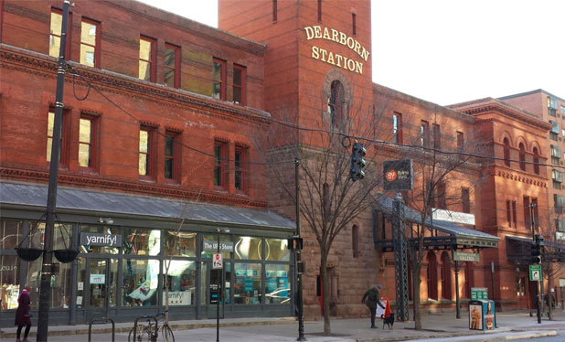

Why we love it

It’s home to the lakefront Museum Campus, where you’ll find three of Chicago’s biggest museums.
Also in the South Loop, you’ll find celebrated jazz clubs, a mix of crowd-pleasing restaurants, and vibrant historic areas
like industrial Motor Row and charming the Prairie Avenue District.
Insider tips
It’s a little mind-blowing arriving on the site of Chicago’s Museum Campus. The three gorgeous neoclassical buildings
that house the museums are set against the blue waters of Lake Michigan on one side and the soaring
skyline on the other.
Take Shoreline Sightseeing Water Taxi’s Lake Route that lets you off right at Shedd Aquarium,
home to more than 32,000 aquatic creatures from all over the plant. The Adler Planetarium — America’s first planetarium — is more than a museum;
it’s a laboratory, a classroom, and a community exploring the universe together. And the monumental Field Museum is home to
Máximo the Titanosaur, SUE the T. rex, and more than 40 million other artifacts.
For a unique urban experience, venture to the Motor Row District along South Michigan Avenue,
Chicago’s former automobile manufacturing hub. Now it’s home to a brewery, an immersive theatre, international restaurants, and more.
In the nearby Prairie Avenue District, you can stroll “Millionaire’s Row,” lined with mansions that once belonged to Chicago’s elite,
including the historic Glessner House Museum. The area is also home to Soldier Field,
which means you’ll find plenty of Bears fans here in the fall and winter.